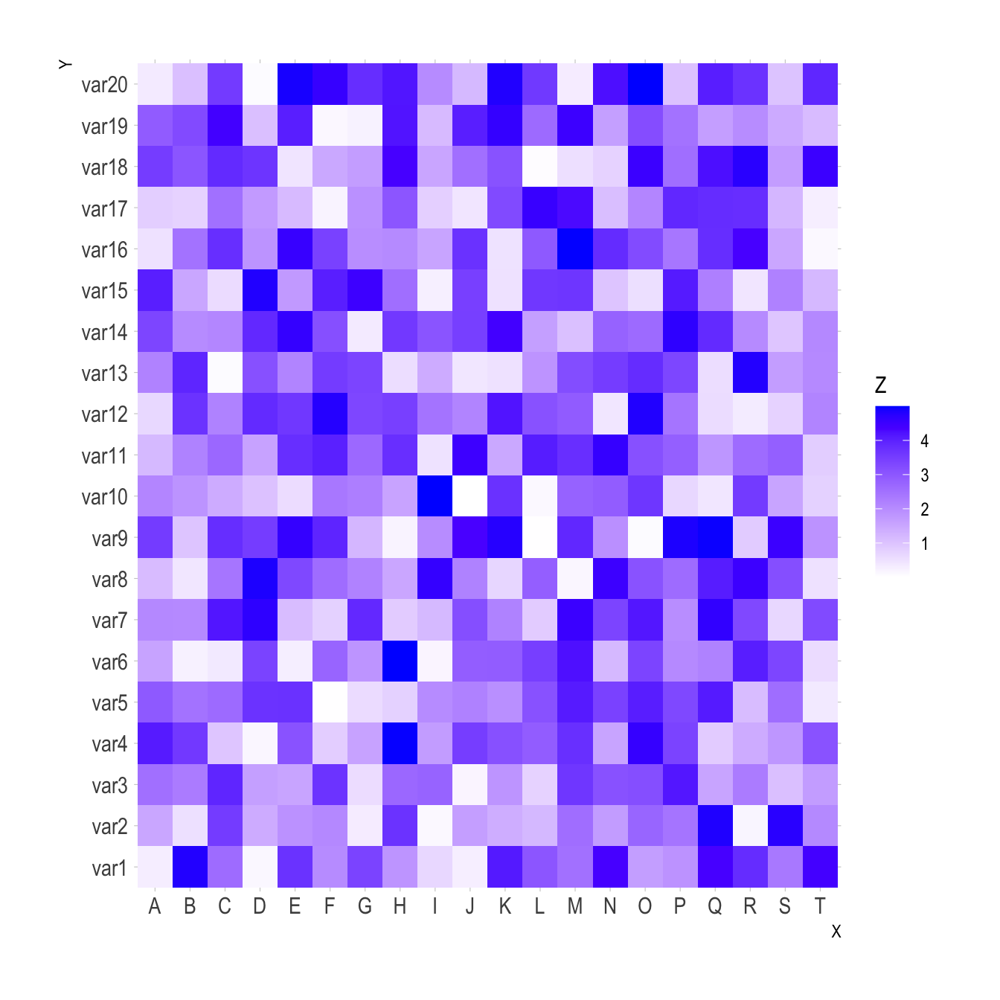
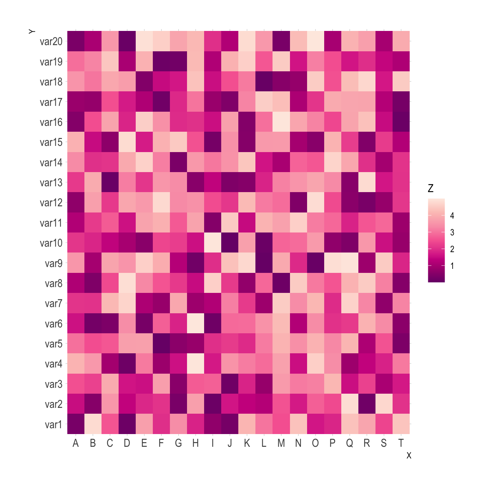
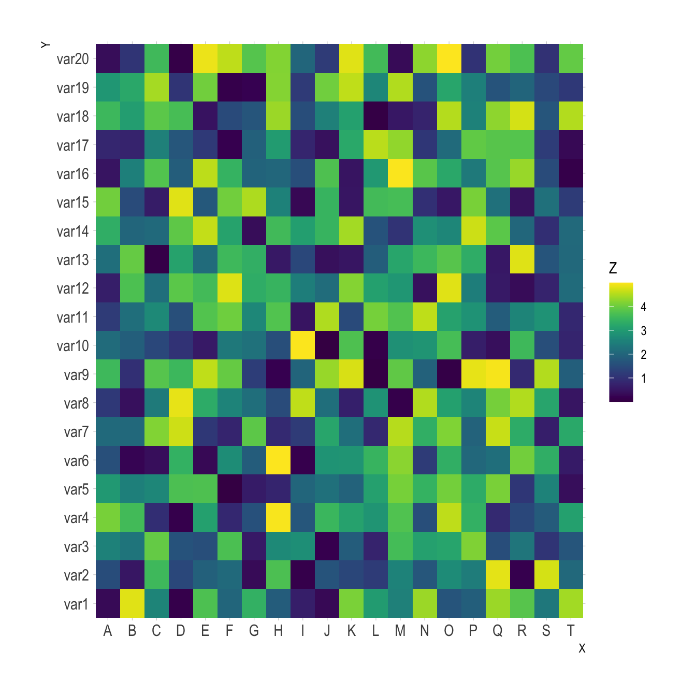

Related chart types

Scatter

Heatmap

Correlogram

Bubble

Connected scatter

Density 2d
This document
provides several examples of heatmaps built
with R and ggplot2. It
describes the main customization you can apply, with explanation and
reproducible code.
Note: The native heatmap() function provides
more options for data normalization and clustering. Consider it as a
valuable option.
ggplot2This is the most basic heatmap you can build with R and
ggplot2, using the geom_tile() function.
Input data must be a long format where each row provides an observation. At least 3 variables are needed per observation:
x: position on the X axisy: position on the Y axisfill: the numeric value that will be translated in a
color
Color palette can be changed like in any ggplot2 chart. Above are 3 examples using different methods:
scale_fill_gradient() to provide extreme colors of the
palettescale_fill_distiller) to provide a ColorBrewer palettescale_fill_viridis() to use Viridis. Do not forget
discrete=FALSE for a continuous variable.# Library
library(ggplot2)
library(hrbrthemes)
# Dummy data
x <- LETTERS[1:20]
y <- paste0("var", seq(1,20))
data <- expand.grid(X=x, Y=y)
data$Z <- runif(400, 0, 5)
# Give extreme colors:
ggplot(data, aes(X, Y, fill= Z)) +
geom_tile() +
scale_fill_gradient(low="white", high="blue") +
theme_ipsum()
# Color Brewer palette
ggplot(data, aes(X, Y, fill= Z)) +
geom_tile() +
scale_fill_distiller(palette = "RdPu") +
theme_ipsum()
# Color Brewer palette
library(viridis)
ggplot(data, aes(X, Y, fill= Z)) +
geom_tile() +
scale_fill_viridis(discrete=FALSE) +
theme_ipsum()It is a common issue to have a wide matrix as input, as for the
volcano dataset. In this case, you need to tidy it with the
gather() function of the tidyr package to
visualize it with ggplot.
# Library
library(ggplot2)
library(tidyr)
library(tibble)
library(hrbrthemes)
library(dplyr)
# Volcano dataset
#volcano
# Heatmap
volcano %>%
# Data wrangling
as_tibble() %>%
rowid_to_column(var="X") %>%
gather(key="Y", value="Z", -1) %>%
# Change Y to numeric
mutate(Y=as.numeric(gsub("V","",Y))) %>%
# Viz
ggplot(aes(X, Y, fill= Z)) +
geom_tile() +
theme_ipsum() +
theme(legend.position="none")plotlyOne of the nice feature of ggplot2
is that charts can be turned interactive in seconds thanks to
plotly. You just need to wrap your chart in an object and
call it in the ggplotly() function.
Often, it is a good practice to custom the text available in the tooltip.
Note: try to hover cells to see the tooltip, select an area to zoom in.
# Library
library(ggplot2)
library(hrbrthemes)
library(plotly)
# Dummy data
x <- LETTERS[1:20]
y <- paste0("var", seq(1,20))
data <- expand.grid(X=x, Y=y)
data$Z <- runif(400, 0, 5)
# new column: text for tooltip:
data <- data %>%
mutate(text = paste0("x: ", x, "\n", "y: ", y, "\n", "Value: ",round(Z,2), "\n", "What else?"))
# classic ggplot, with text in aes
p <- ggplot(data, aes(X, Y, fill= Z, text=text)) +
geom_tile() +
theme_ipsum()
ggplotly(p, tooltip="text")
# save the widget
# library(htmlwidgets)
# saveWidget(pp, file=paste0( getwd(), "/HtmlWidget/ggplotlyHeatmap.html"))Related chart types